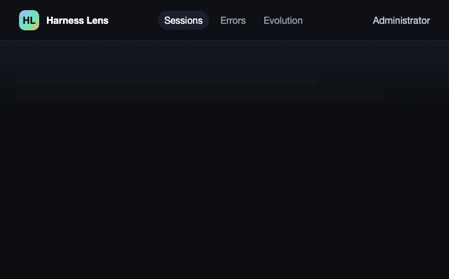
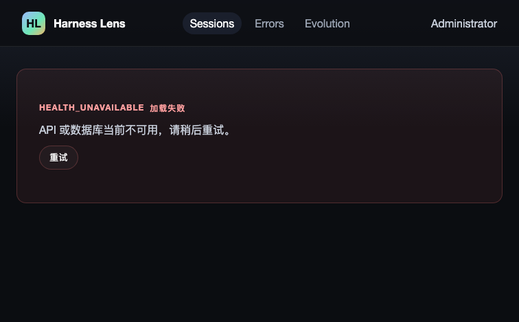
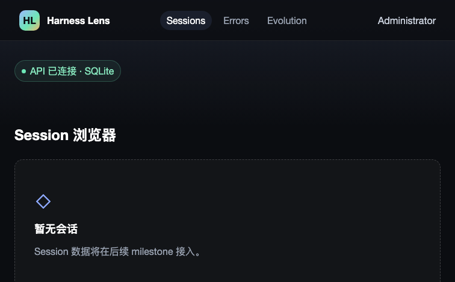
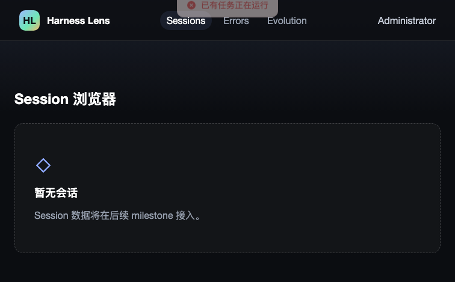
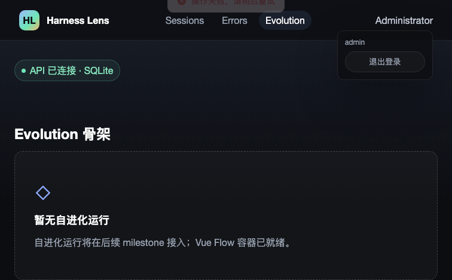
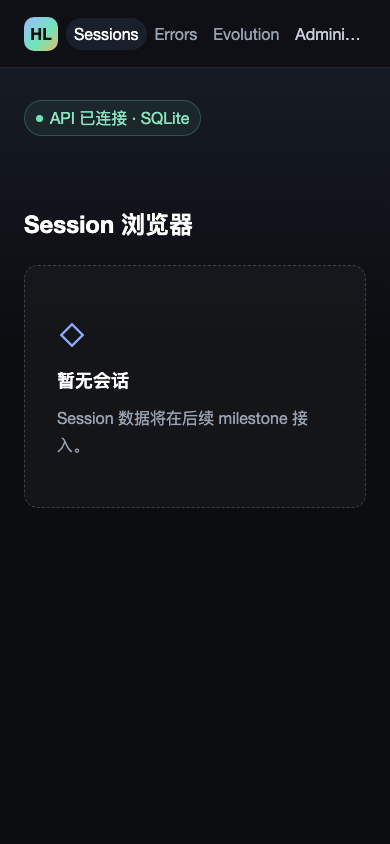
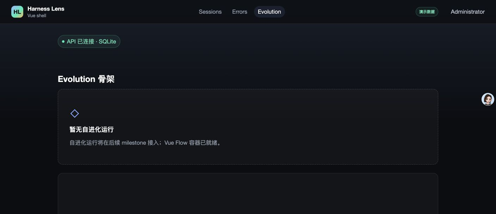

- Issue
- #32 · M1 app shell states
- PR
- #81
- Commit
- 2366a5a
- Runtime
- FastAPI + SQLite + Vite + Chrome
- Viewports
- 1408×667 · 390×844
- Credentials
- <redacted>
Harness Evolution · PR #81
M1-09 应用壳与三态集成冒烟
在真实 Chrome、Vite、FastAPI 与隔离 SQLite 上验证三入口、共享三态、demo 角标、409 Message、全局错误提示、Vue Flow 深链、seed 幂等与响应式布局。16 个运行时场景全部通过，标准 503 可重试恢复，未发现意外浏览器告警或运行时异常。
16运行时场景
16通过
0意外控制台告警/错误
4/4仓库 Chrome E2E
Environment and Artifact
2026-10-25 · macOS · Chrome · FastAPI + Vite + SQLiteScenario Matrix
16 pass| # | 场景 | 结果 | 观测 | 证据 |
|---|---|---|---|---|
| 01 | Sessions 默认页与三入口 | PASS | 登录后进入 /sessions；Sessions、Errors、Evolution 三个入口可见，Sessions active，空态与 demo 角标正确。 | screenshots/01-sessions-demo.png |
| 02 | Errors 占位 | PASS | /errors 为已鉴权占位页，active 为 Errors；显示“暂无问题”并明确后续 milestone 接入，没有模拟问题行。 | screenshots/02-errors-placeholder.png |
| 03 | Evolution 占位 | PASS | 显示“暂无自进化运行”和 320px 容器，未提前展示假运行数据。 | screenshots/03-evolution-placeholder.png |
| 04 | 用户菜单 | PASS | 当前用户菜单可展开，退出入口可见；受保护页面仍保留 shell。 | screenshots/14-user-menu.png |
| 05 | 未登录回跳 | PASS | 清 cookie 后访问 /sessions 跳转 /login 并携带原路径；仓库 E2E 同时覆盖 /errors、/evolution。 | screenshots/16-unauth-redirect.png expected refresh 401 only |
| 06 | Health loading | PASS | health 延迟响应时显示共享 LoadingSkeleton“正在连接 API”，TopNav 与 shell 保持。 | screenshots/08-health-loading.png |
| 07 | 标准 503 ErrorState | PASS | 503 HEALTH_UNAVAILABLE 被解码为 ApiError；页面显示共享 ErrorState、错误码和重试按钮，没有 TypeError 或白屏。 | screenshots/09-health-error.png runtime exceptions=0 |
| 08 | 503 后手动重试恢复 | PASS | 点击重试后 health 返回 200，Sessions 内容恢复，导航与 shell 保持。 | screenshots/10-health-retry-success.png |
| 09 | 409 RUN_BUSY Message | PASS | 409 显示固定定位 ElMessage“已有任务正在运行”；shell、导航和页面均保留，无整页 ErrorState。 | screenshots/13-conflict-toast.png toast position=fixed |
| 10 | 全局 Vue 错误提示 | PASS | 专用错误触发后 ElMessage 显示“操作失败，请稍后重试”，shell 保留；只有预期错误日志。 | screenshots/15-global-error-toast.png console-summary.json |
| 11 | Demo 角标 | PASS | HE_PHASE=demo 时顶栏显示“演示数据”。 | screenshots/01-sessions-demo.png |
| 12 | Scaffold 无角标 | PASS | API 以 HE_PHASE=scaffold 重启后，同一账号页面不显示 demo 角标。 | screenshots/05-scaffold-no-badge.png |
| 13 | Live 无角标 | PASS | API 以 HE_PHASE=live 重启后，同一账号页面不显示 demo 角标。 | screenshots/06-live-no-badge.png |
| 14 | Seed 幂等且无领域假数据 | PASS | fixtures:seed 连续两次返回同一管理员 id；SQLite users=1、job_runs=0、evolution_run_events=0，没有伪造会话、问题、probe 或 run。 | same admin id across two runs rows users=1 job_runs=0 events=0 |
| 15 | 390px 响应式 | PASS | 390×844 下 scrollWidth=clientWidth=390，用户菜单与退出入口保持在视口内；三入口无横向滚动。 | screenshots/11-narrow-390.png |
| 16 | Evolution 全新深链控制台 | PASS | 全新标签直接访问 /evolution，canvas 首帧尺寸为 708×320（CUA）及 1080×320（CDP），Vue Flow warning/error/exception=0。 | screenshots/04-evolution-direct.png screenshots/12-evolution-direct.png vueFlowDirect=[] |
Issues and Observations
No defects foundNo defects were found.
Evidence
10 screenshots









Automated Coverage Assessment
5 areas reviewed| 区域 | 覆盖 | 结论 | 建议 |
|---|---|---|---|
| 应用壳与导航 | Computer Use + Chrome E2E | 三入口、active 状态、auth 边界和响应式均通过。 | 后续新增入口时沿用 shell E2E。 |
| 共享三态 | 真实 503 fault proxy + E2E | loading、错误码、ErrorState 与手动 retry 均实际验证。 | 保留标准 ErrorResponse fault 测试。 |
| 全局错误与 409 | CDP 注入 + 真实 Chrome | 409 与 Vue handler 都显示可定位 ElMessage，shell 不消失。 | 继续区分可重试页错误和非阻塞冲突。 |
| Seed | 两次真实 CLI + SQLite 行数 | 身份种子幂等，未生成领域假数据。 | 完整 fixture corpus 留给 M2-01。 |
| 自动化回归 | pnpm test:e2e -- m1-shell | 4/4 真实 Chrome 场景通过。 | CI 每次 PR 继续执行。 |
Conclusion
通过当前提交已满足 M1-09 的应用壳、三态、demo 角标、seed 和浏览器集成验收。
- 标准 503 不再白屏，ErrorState 和手动重试均真实通过。
- Vue Flow 全新深链控制台清洁。
- 临时服务、SQLite、cookie 与凭据均已清理或脱敏。
证据源：Computer Use、真实 Chrome/CDP、fault proxy、仓库 E2E、seed CLI 与 SQLite 行数。HTML 由 JSON 渲染，不手改。